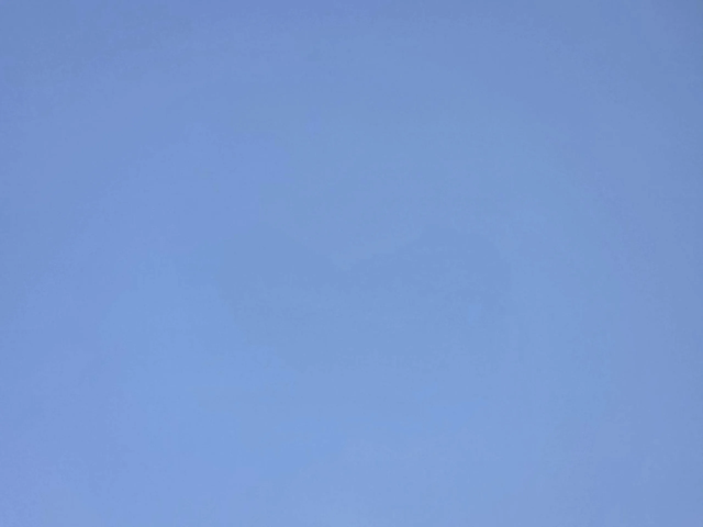
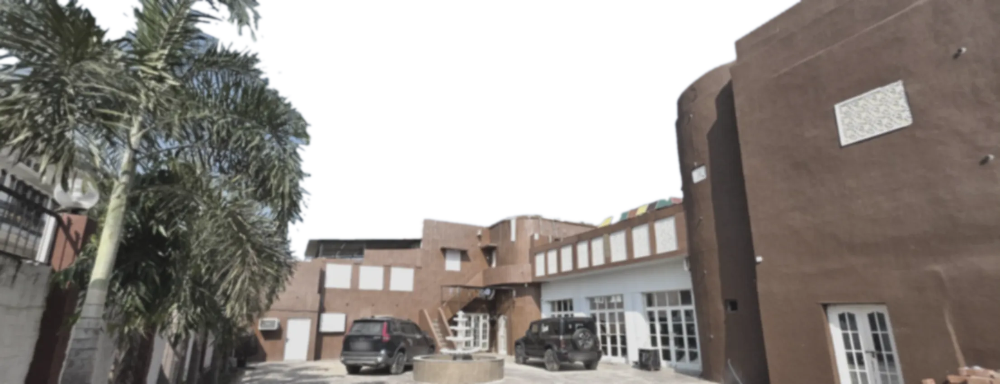
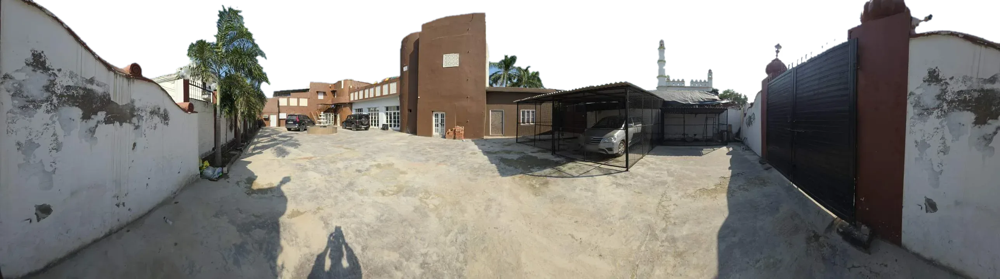
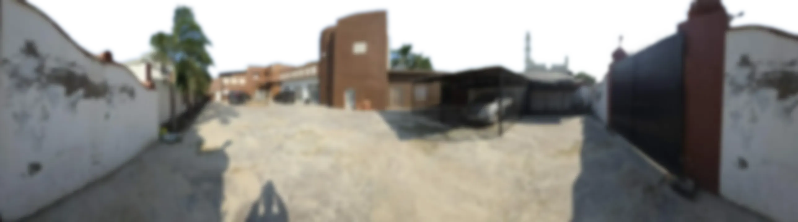
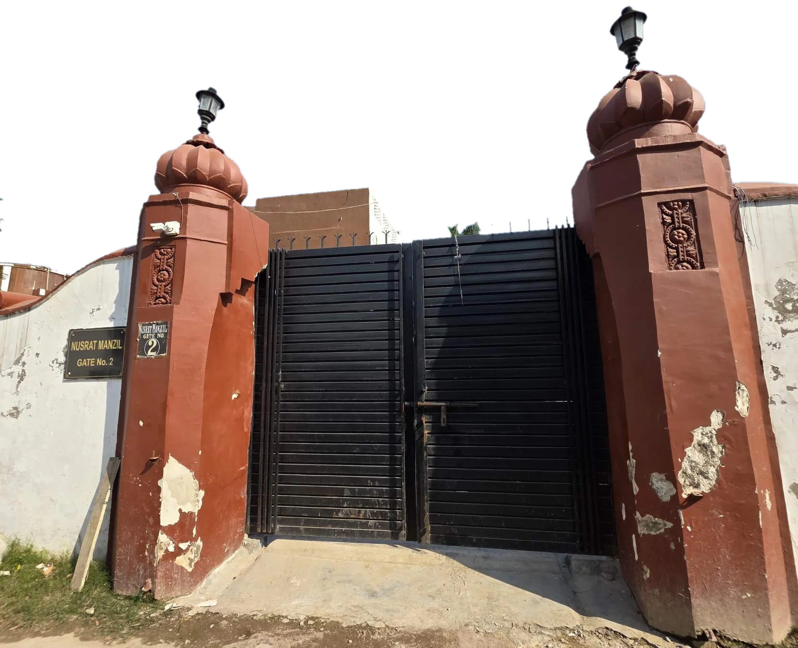
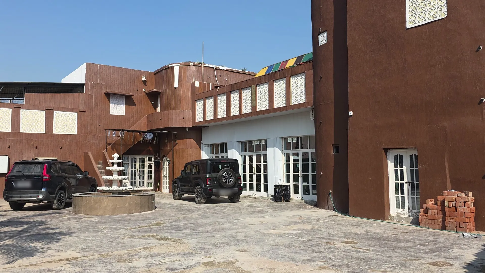
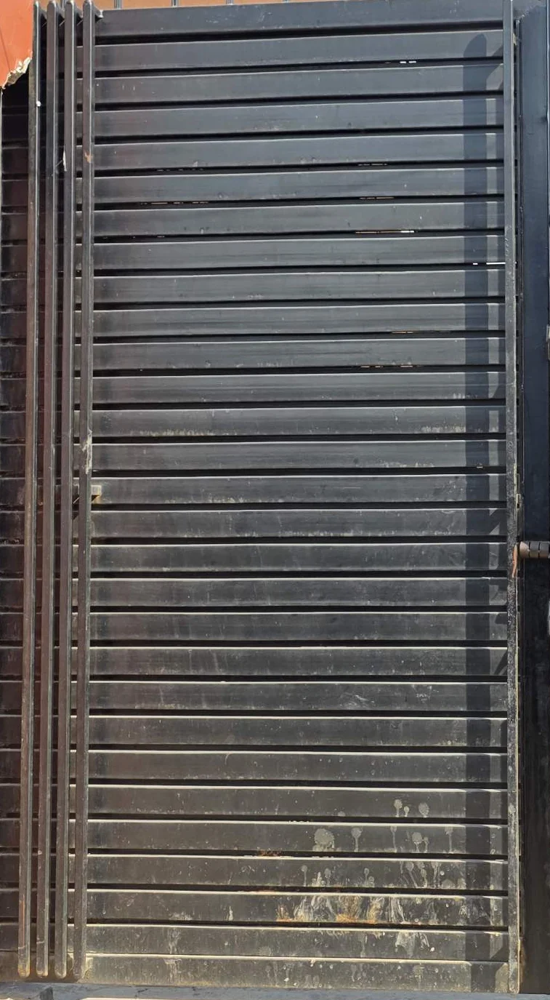
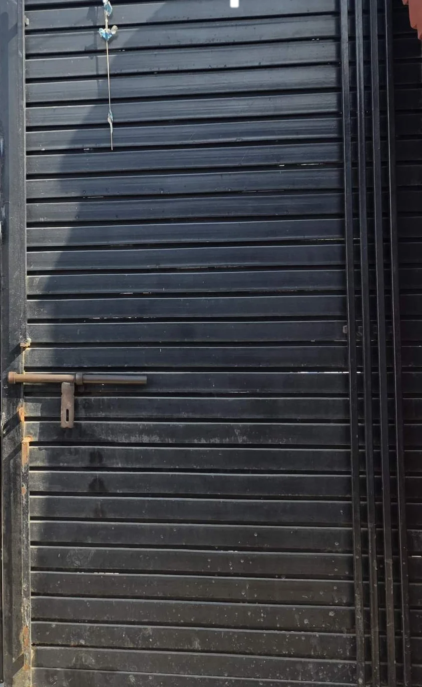

Old walls, long light, and a gate that has opened for every generation that came home.
Sandila


The iron gate between the lotus pillars, where every arrival begins.
Jaali screens, a tiered fountain and the house gathered around it.
A family house in Sandila: the gatehouse, the courtyard and the rooms that open onto it.